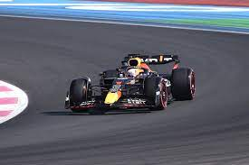

Mav Verstappen is a three time world champion. He has won three years in a row. The last championship he won was the most dominant in F1 history. He got the record for the most wins in a row, which is 10. He aslo has the record for most top three finishes in a F1 sesson. He got top three in 21 out of the 22 races. He is also the youngest driver to get a race win, he was 18 years old. IF he can keep up this pace he might be in the goat debate.
From wikimedia Commons
The RB19 was one of the most dominant F1 cars in history. It was the car the Max Verstappen and Checo Perez used in the 2023 season. It has the record for the most wins in a row at 15 wins. It also has the record from the most Constructors Point in a season at 860. Finaly it has the most wins in a season at 21.
Image from Flickr by Jeff